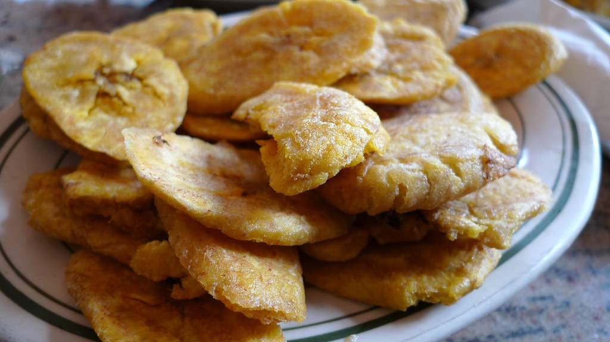

Tostones

Description
Plantains not ripe enough for maduros? Want something more savory out of your plantains? Tostones got you covered! Try them as a snack when you crave a crispy, salty treat (that isn't a potato chip) or as a stand out side dish to compliment your delicious Arroz con Pollo!
While they are perfect all on their own, I've included a mini recipe for a garlic Mojo sauce to dip them in. If that's your thing.
Ingredients - Tostones
- 2-3 Green (unripe) Plantains
- Rice bran oil or other high heat oil, for frying
- Salt to taste (flaky salt is best!)
Ingredients - Garlic Mojo Dipping Sauce
- 6 garlic cloves, mashed or processed into a paste
- 1/2c sour orange juice
- 1/3c EVOO (that's Extra Virgin Olive Oil)
- 1/2 tsp salt
- 1 pinch of pepper, to taste
Steps - Tostones
- Cut both ends off of the platain and make shallow slits down the length of the fruit, along the ridges of the peel.
- Peel away the skin using your fingers (or a knife) and cut the plaintain into thick rounds. About 1/2 - 3/4 inch thick.
- Fry the rounds in a deep nonstick skillet, or dutch oven, over medium-high heat for about 5min per side. Making sure they are completely immersed in the oil.
- Remove the rounds and place them on a drip pan or paper towels.
- Use a plantain press, wrapped in plastic wrap or parchment paper, to flatten the rounds once they are cool enough to touch.
- Fry the now flattened rounds for another 4-5min per side until they're completely golden brown and crispy.
- Remove from pan and drain the same as before. Make sure to sprinkle them with salt immediately after placing them to drain.
Notes
Don't have a plantain press?
You can use the bottom of a cup, a hardcover book, the bottom of a pan (all wrapped in plastic wrap or parchment paper, of course) or any other sturdy flat object!